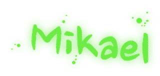
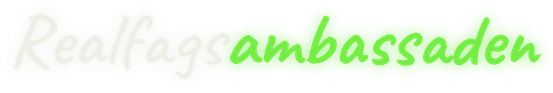

Mikael

Ph.d. i matematikkUtdanningPh.d.Erfaring10 årKvalitetKreativFun factHar spilt fotball i KinaKoffein☕☕☕☕#004

Ph.d. i matematikkUtdanningPh.d.Erfaring10 årKvalitetKreativFun factHar spilt fotball i KinaKoffein☕☕☕☕#004Mikael har doktorgrad i matematikk.
Kommer snart.
Kommer snart.
Lenker kommer.
Vil du booke privatundervisning, eller invitere meg til skolebesøk, show eller andre arrangementer? Kontaktinformasjon kommer snart.